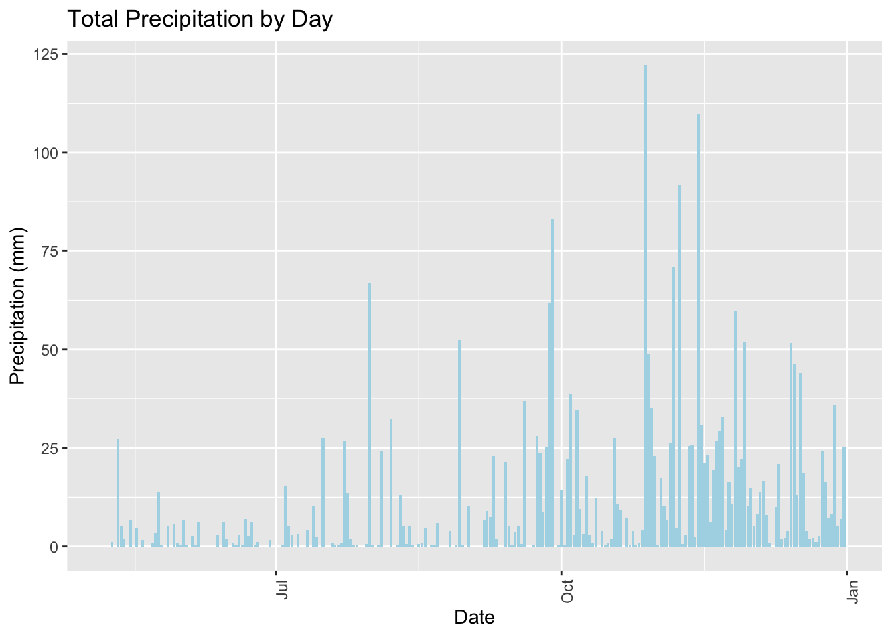
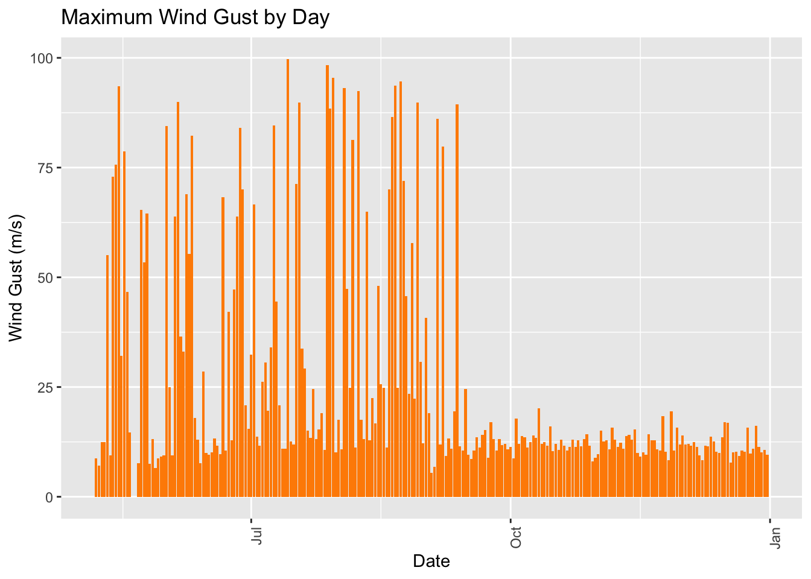
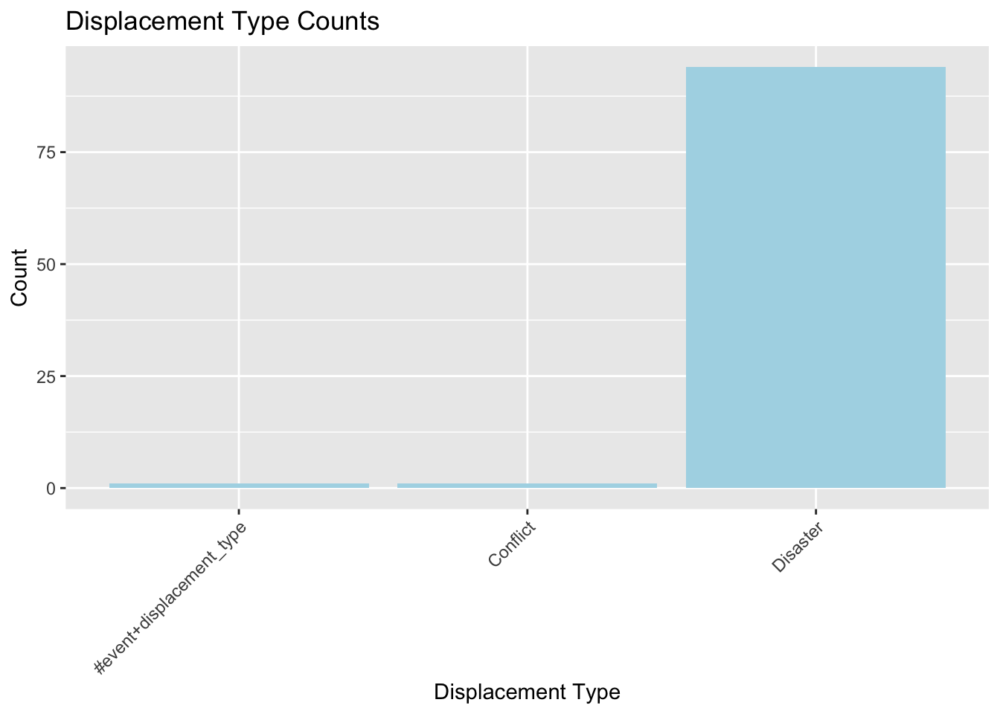
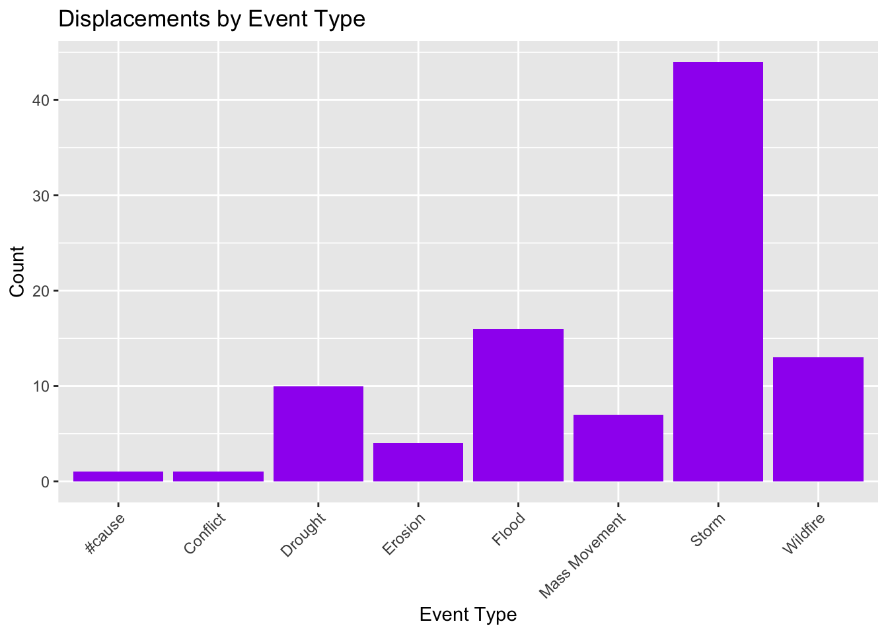
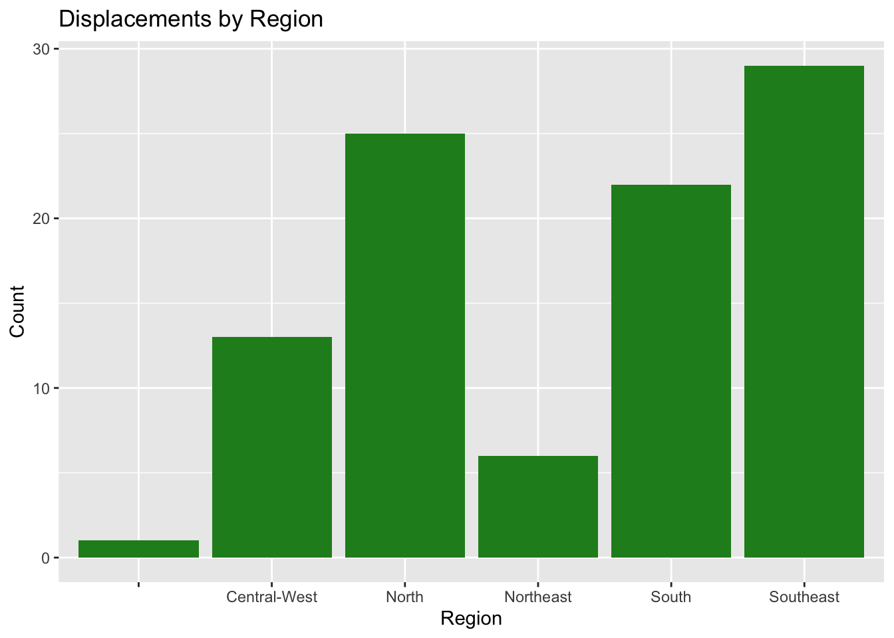
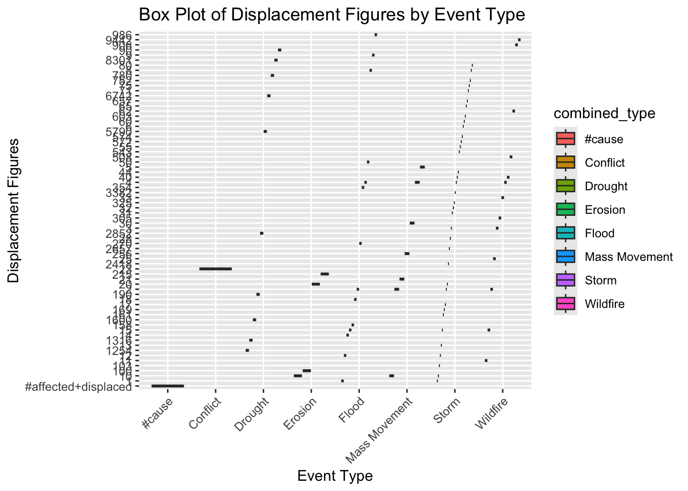
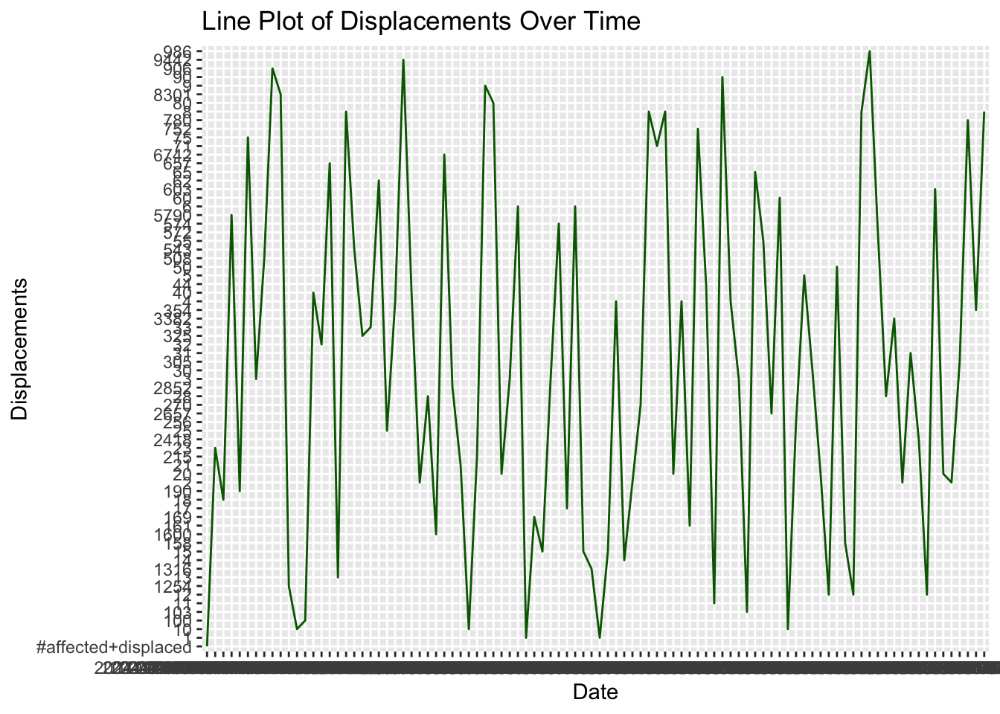

Load in Packages used in the analysis
This is SDR 2023 Data
sdr_data <- read_csv(here("data/SDR-2023-Data.csv"))sdr_data_sids <- read_csv(here("data/SDR-for-SIDS/SIDS-SDR-2023-data.csv"))Clean column names of our dataframe
sdr_data_sids <- sdr_data_sids %>%
clean_names()brazil_data <- read_csv("~/Downloads/BRAZIL_CITIES.csv")## Warning: One or more parsing issues, call `problems()` on your data frame for details,
## e.g.:
## dat <- vroom(...)
## problems(dat)## Rows: 5573 Columns: 1
## ── Column specification ────────────────────────────────────────────────────────
## Delimiter: ","
## chr (1): CITY;STATE;CAPITAL;IBGE_RES_POP;IBGE_RES_POP_BRAS;IBGE_RES_POP_ESTR...
##
## ℹ Use `spec()` to retrieve the full column specification for this data.
## ℹ Specify the column types or set `show_col_types = FALSE` to quiet this message.brazil_data <- read_csv("~/desktop/event_data_bra.csv")## Rows: 96 Columns: 36
## ── Column specification ────────────────────────────────────────────────────────
## Delimiter: ","
## chr (30): country, iso3, latitude, longitude, centroid, role, displacement_t...
## dbl (2): id, event_id
## lgl (4): event_codes, event_code_types, old_id, displacement_occurred
##
## ℹ Use `spec()` to retrieve the full column specification for this data.
## ℹ Specify the column types or set `show_col_types = FALSE` to quiet this message.weather_data <- read.csv("~/Downloads/weather_2000.csv", stringsAsFactors = FALSE)weather_data$DATA <- as.Date(weather_data$DATA..YYYY.MM.DD.)
precipitation_data <- aggregate(weather_data$PRECIPITAÇÃO.TOTAL..HORÁRIO..mm.,
by = list(Date = weather_data$DATA), sum, na.rm = TRUE)Brazil is the largest country in South America. It has about 8.5 million square kilometers, bigger than continental USA. It sits number 52 in the ranking with the sustainable development report with a 73.8 overall score. With a population of about 220 million people, Brazil is relatively free of major natural disasters like tsunamis, volcanoes and earthquakes, however its massive geography makes different regions vulnerable to drought, flood and different weather pattern displacements. In the graphs below I’ll give details on different weather events and displacements with data pulled from this website
ggplot(precipitation_data, aes(x = Date, y = x)) +
geom_bar(stat = "identity", fill = "lightblue") +
labs(title = "Total Precipitation by Day", x = "Date", y = "Precipitation (mm)") +
theme(axis.text.x = element_text(angle = 90, hjust = 1))
Above you can see a graph showing the amount of precipitation in Brazil during the year. Per this data it can be assumed that summers in South America rains the most.
humidity_data <- aggregate(weather_data$UMIDADE.RELATIVA.DO.AR..HORARIA....,
by = list(Date = weather_data$DATA), max, na.rm = TRUE)## Warning in FUN(X[[i]], ...): no non-missing arguments to max; returning -Inf
## Warning in FUN(X[[i]], ...): no non-missing arguments to max; returning -Infwind_gust_data <- aggregate(weather_data$VENTO..RAJADA.MAXIMA..m.s.,
by = list(Date = weather_data$DATA), max, na.rm = TRUE)## Warning in FUN(X[[i]], ...): no non-missing arguments to max; returning -Inf
## Warning in FUN(X[[i]], ...): no non-missing arguments to max; returning -Infggplot(wind_gust_data, aes(x = Date, y = x)) +
geom_bar(stat = "identity", fill = "darkorange") +
labs(title = "Maximum Wind Gust by Day", x = "Date", y = "Wind Gust (m/s)") +
theme(axis.text.x = element_text(angle = 90, hjust = 1))## Warning: Removed 2 rows containing missing values or values outside the scale range
## (`geom_bar()`).
In the graph above we can see a measurement of wind gusts per different days of the year in Brazil. Brazilian falls and winters tend to have days with highter windgusts than spring and summer days.
event_data <- read.csv("~/desktop/event_data_bra.csv")ggplot(event_data, aes(x = displacement_type)) +
geom_bar(fill = "lightblue") +
labs(title = "Displacement Type Counts", x = "Displacement Type", y = "Count") +
theme(axis.text.x = element_text(angle = 45, hjust = 1))
This graph highlights disasters as solely one of the greatestn sources of internal displacements inside of Brazil.
ggplot(event_data, aes(x = combined_type)) +
geom_bar(fill = "purple") +
labs(title = "Displacements by Event Type", x = "Event Type", y = "Count") +
theme(axis.text.x = element_text(angle = 45, hjust = 1))
The events that causes disruptions and displacements, shown in a bar graph. Flood and storm shown in higher numbers, with wildfire and droughts coming in second and third places.
event_data$region <- sub(".*, (.*) Region,.*", "\\1", event_data$locations_name)ggplot(event_data, aes(x = region)) +
geom_bar(fill = "forestgreen") +
labs(title = "Displacements by Region", x = "Region", y = "Count")
Bar graph shows which regions of Brazil suffers the most displacement. Southeast and North Brazil lead in numbers. Northeast show low numbers because it is historically a much drier, sub-humid climate, with major droughts throughout years and generally wet winters, hence why relatively low in the graph.
ggplot(event_data, aes(x = combined_type, y = figure, fill = combined_type)) +
geom_boxplot() +
labs(title = "Box Plot of Displacement Figures by Event Type",
x = "Event Type", y = "Displacement Figures") +
theme(axis.text.x = element_text(angle = 45, hjust = 1))
A more detailed box plot to visualize displacement figures and the event causes.
ggplot(event_data, aes(x = created_at, y = figure, group = 1)) +
geom_line(color = "darkgreen") +
labs(title = "Line Plot of Displacements Over Time",
x = "Date", y = "Displacements")
Line plot showing displacement numbers over time in the country of Brazil.
event_data$region <- sub(".*, (.*) Region,.*", "\\1", event_data$locations_name)plot_ly(data = event_data,
x = ~latitude,
y = ~figure,
type = 'scatter',
mode = 'markers',
color = ~displacement_type,
text = ~paste("Location:", locations_name, "<br>Event Type:", combined_type)) %>%
layout(title = "Interactive Scatter Plot of Displacements vs. Latitude",
xaxis = list(title = "Latitude"),
yaxis = list(title = "Displacements"))Bonus: Fun-little interactive map showing the type of displacement event, the number of events and the latitude associated with it. Like shown in different data graphs, most latitude numbers sit in the southeast and north region of the country.
plot_ly(data = event_data,
x = ~combined_type,
y = ~figure,
type = 'box',
color = ~combined_type) %>%
layout(title = "Interactive Box Plot of Displacements by Event Type",
xaxis = list(title = "Event Type"),
yaxis = list(title = "Displacement Figures"))Bonus: One more interactive box plot with the displacement figures and disaster causes. If you hover over each color there will be more detailed displayed for each event type.